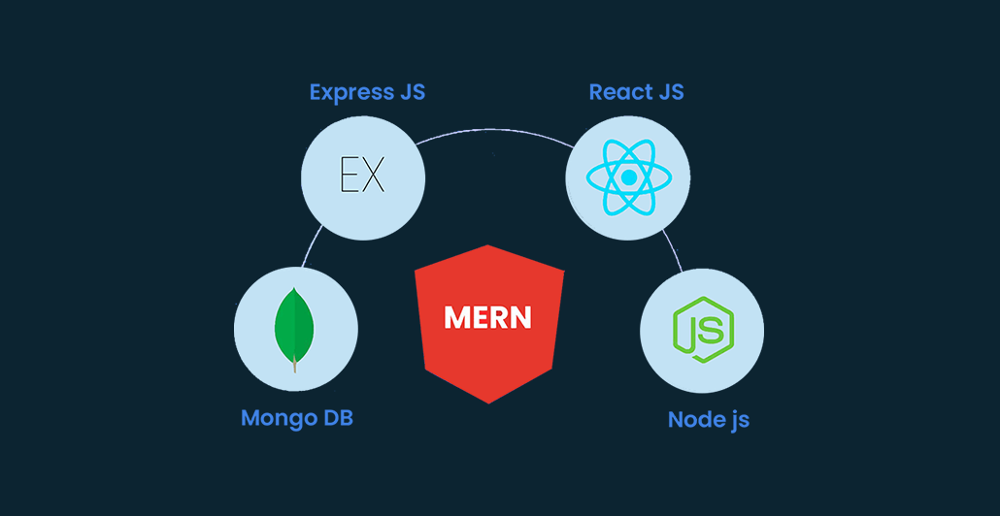

Today’s world is in the phase of dramatic evolution. The pace is breakneck and quick. To match the speed and vigour, we must upgrade to the latest trends in our ethics and skill sets. This up-gradation is the only way to stay recognized on the national and international spectrum.
Pakistan is a developing nation with much potential and talent. To compete and win globally, we must acquire professional skillfulness, an epic representation of research and practice. The combination of technical set, management skills, latest trends, in-depth analysis, and world-class tendencies will help our nation to stand out from the crowd and win the competition in its truest sense with optimal ethics.
By choosing MAJU, you have taken the right step in the right direction. This direction will lead you to the quality investment of skills in demand with the golden principles of our beacon of light- Muhammad Ali Jinnah. We are committed to providing a refreshing and supportive environment that allows students to attain confidence and maximize their potential in their chosen field, with a solid grip on the latest industry trends, whether business, engineering, computing, or life sciences. Our study programs are structured so that the ‘latest’ is always -present- in educational modules and techniques. The faculty on board is highly educated and competent in skills and techniques- with the latest in the field to empower you with the best! At MAJU, we welcome you with open arms and a solid belief in your capabilities. Here, you will get practical knowledge in your chosen field and gain in-depth knowledge to lead from the front while being the support system to the country because we all are here to serve and lead together. We hope your study and stay in the university will bring out the Jinnah in you!
